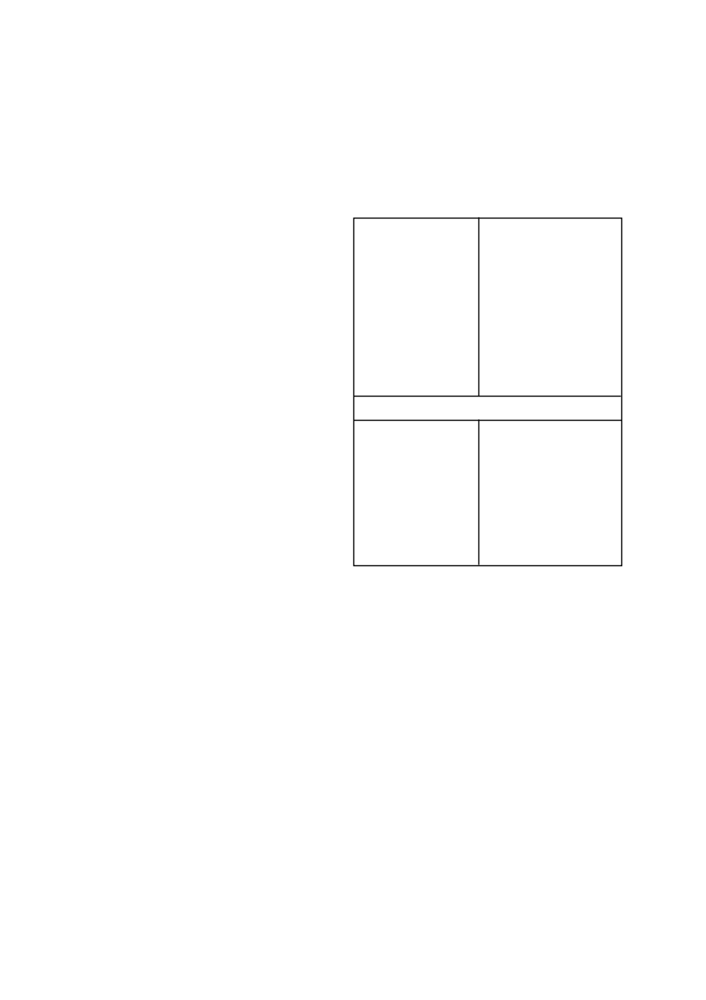

•
Waar grond pH verstellings gedoen is, moet gelet word op die
gebruik van sulfoniel ureum onkruiddoders, triazolopiri midien
sulfonanilied onkruiddoders en imidasolinoon on kruid doders
wat almal baie sensitief is vir grond pH fluktuasies.
Kontak u plaaslike SYNGENTA verteenwoordiger voordat
op enige bekalkings program besluit word om gewas
keuses en gewas beskermings programme te bespreek.
5. ONKRUIDE WAT BEHEER WORD
Die volgende onkruidsoorte word normaalweg beheer deur die
vooropkomtoediening van
DUAL GOLD
teen die toedienings-
hoeveelhede soos hieronder aangedui:
Brachiaria eruciformis
litjiesinjaalgras
Chloris virgata
witpluim-Chloris
Dactyloctenium aegyptium
hoenderspoor
Digitaria sanguinalis
kruisvingergras
Echinochloa crusgalli
hanepootmanna
Eleusine indica
jongosgras
Panicum maximum
gewone buffelsgras
Panicum schinzii
soetbuffelsgras
Pseudobrachiaria deflexa
bastersinjaalgras
Setaria pallide-fusca
rooiborselgras
Setaria verticillata
klitsborselgras
Tragus berteronianus
kleinwortelsaadgras
Tragus racemosus
grootwortelsaadgras
Urochloa mosambicensis
bosveldbeesgras
Urochloa panicoides
beesgras
Onkruide wat wisselvallig beheer word
Amaranthus hybridus
Kaapse misbredie
Amaranthus spinosus
doringmisbredie
Amaranthus thunbergii
rooimisbredie
Chenopodium carinatum
groenhondebossie
Cleome monophylla
rusperbossie
Commelina benghalensis
Bengaalse wandelende Jood
Cyperus esculentus
geeluintjie
Datura ferox
grootstinkblaar
Datura stramonium
stinkblaar
Galinsoga parviflora
knopkruid
Nicandra physaloides
basterappelliefie
Portulaca oleracea
porslein
Belangrik
Geeluintjie
(Cyperus esculentus)
Die beheer van
Cyperus esculentus
kan verbeter word deur aan
die volgende voorwaardes te voldoen:
•
Die plantproses onmiddellik voorafgegaan word deur ‘n deeg-
like skaarploeg bewerking.
•
‘n Relatiewe fyn, egalige en ferm saadbed voor te berei.
•
Die
DUAL GOLD
toediening gevolg word deur minstens 10 -
20 mm sagte deurdringende reën (of besproeiing) om
DUAL
GOLD
in die grond in te loog voordat
Cyperus esculentus
opkom (gewoonlik 7 - 10 dae na deeglike grondbewerking).
Die kans vir hierdie toestande om voor te kom, is groter tydens
die laaste helfte van die plantseisoen (November).
Namate die
grond swaarder word, is meer reën of besproeiing nodig om
goeie resultate te verkry.
Om hierdie rede is beheer soms baie
swak op turfgronde.
•
Reënval na onkruiddodertoediening maar voor
Cyperus escu-
lentus
opkoms is noodsaaklik vir optimale
Cyperus esculen-
tus
beheer.
Gevolglik moet
DUAL GOLD
tydens of onmiddel-
lik na die plantproses in klam grond toegedien word.
•
Wanneer in droë grond geplant word (onvoldoende vog om
Cyperus esculentus
te laat ontkiem), moet die toediening van
DUAL GOLD
uitgestel word tot so na as moontlik aan, maar
beslis voor die eerste reën.
Bosveldbeesgras en beesgras
(Urochloa
spp
)
Urochloa species
ontkiem baie vlak en in gevalle waar beperkte
of geen meganiese bewerking plaasvind, soos in minimum tot
geen bewerking, mag swak beheer van die grasse verkry word
DUAL GOLD
/ 2
•
Groenbone
DUAL GOLD
is geregistreer op
groenbone
vir die uitsluite-
like gebruik deur McCain op die kultivars Fortè, Masai en Dark
Seeded Provider in die produksiegebiede van die Loskopskema,
Letsitele, Ohrigstad en enkele gedeeltes van die Hoëveld.
•
DUAL GOLD
mag sekere gewasse beskadig onder die vol-
gende omstandighede:
•
Mielies en suikermielies
•
Swak gedreineerde gronde.
•
Gronde met ‘n verdigtingslaag.
•
Nat en koue toestande direk na ‘n toediening.
•
Ingeteelde ouerplante van mieliebasters.
Raadpleeg in
hierdie verband eers ‘n verteenwoordiger van Syngenta,
die verspreider of saadverskaffer.
•
Tabak
•
wat op baie sanderige en/of gruiserige grond geplant
word.
•
Graansorghum en voersorghum
•
wat op baie sanderige en/of gruiserige grond geplant
word.
•
op gronde met ‘n hoë fynsandinhoud (> 60 %) en/of
swak struktuur wat geneig is om toe te slaan en te verdig
na reën en gevolglik swak deurlug is.
•
wat dieper as 50 mm geplant is.
•
wat op landerye met ‘n hoë voorkoms van grondge-
draagde siektes en/of waar monokultuur toegepas word.
•
wat sonder die saad behandeling CONCEP 960 EC
geplant is.
•
Droëbone
•
wat op landerye met ‘n hoë voorkoms van grondge-
draagde siektes en/of waar monokultuur toegepas word.
•
onder warm droë toestande veral wanneer ‘n verdigte
laag in die grond voorkom.
Hierdie toestande kan ook
aanleiding gee tot ‘n verhoogde sensitiwiteit vir wind-
skade by bone.
•
onder versuiptoestande op vlak, sanderige gronde,
< 100 mm diep, met ‘n ondeurdringbare kleiondergrond.
•
Sonneblomme
•
onder versuiptoestande op vlak, sanderige gronde,
< 100 mm diep, met ‘n ondeurdringbare kleiondergrond.
Belangrik
Indien ander onkruiddoders in kombinasie met
DUAL GOLD
gebruik word, moet die gebruiksbeperkings van hierdie onkruid-
doders, soos op die betrokke etiket aangedui, nagekom word.
Waarskuwing:
Moontlike beskadiging van triasien sensi-
tiewe gewasse
•
Waar gronde met kalk behandel is om die pH te verhoog mag
die moontlikheid van gewas beskadiging dramaties verhoog
in gronde waar triasienes voorheen toegedien is. Dit gebeur
as gevolg van die triasien molekule wat op die klei kompleks
vervang word met kalsium katione en die triasien dus meer
beskikbaar word in die grondwater kompleks.
•
Geen triasien sensitiewe gewasse moet na kalk toedienings
geplant word nie. Dit is selfs van toepassing indien triasiene
teen wisselbou dosisse gespuit is in vorige jare. Slegs mie
lies
moet geplant word direk na kalk toedienings
•
Triasien sensitiewe gewasse sluit in alle breëblaargewasse
soos die boon gewasse en sonneblomme asook alle klein-
graangewasse soos koring.
•
Hierdie waarskuwing waarborg egter nie dat geen skade aan
selfs mielies in die daaropvolgende aanplanting sal voorkom
nie aangesien groot volumes triasiene beskikbaar mag raak
afhangende van die volume kalk wat toegedien word en die
reënval wat kan voorkom.
Waarskuwing:
Moontlike
verhoogde effektiwiteit, fitotok-
sisiteit en verlengde nawerking
•
‘n Verhoging in die grond pH na vlakke bokant 7 skep toe-
stande waar verhoogde effektiwiteit en gepaardgaande verla-
ging in selektiwiteit kan voorkom. Hierdie verhoogde pH vlakke
kan ook verlengde grondnawerking tot gevolg hê wat veral
onder besproeiing die opvolg gewaskeuse mag beïnvloed.
